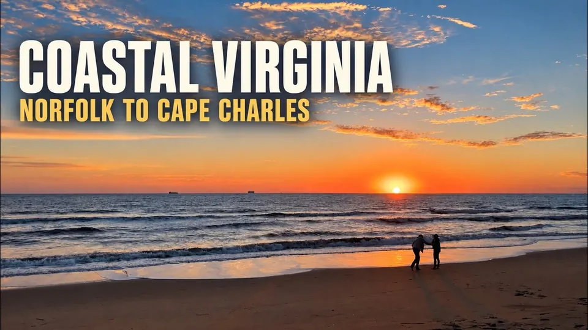

Norfolk
Virginia

The places
3 films from a 2024 road trip named in the titles.
The map marks the places that can be located from those titles; it is not a record of one continuous drive.
The map loads when you scroll to it. The stops are listed below.
Map data © OpenStreetMap
Step through the stops
Virginia
Virginia
Virginia
Virginia
Virginia
Virginia
West Virginia
Along the way
Norfolk, Virginia, United States
Listed as: Hilton Norfolk
100 E. Main Street, Norfolk, VA 23510
Roanoke, Virginia, United States
Listed as: Hotel Roanoke
110 Shenandoah Ave NW, Roanoke, VA 24016
Lynchburg, Virginia, United States
Listed as: Virginian Hotel
712 Church Street, Lynchburg, VA 24504
The films